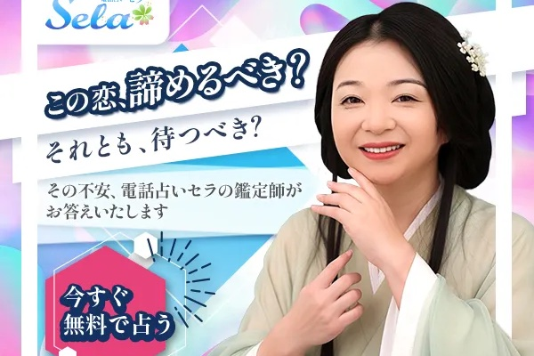
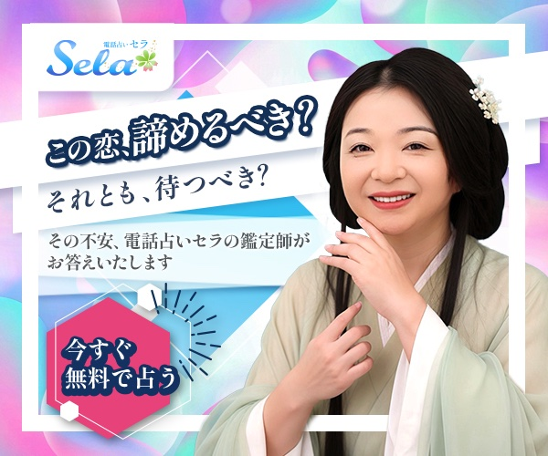
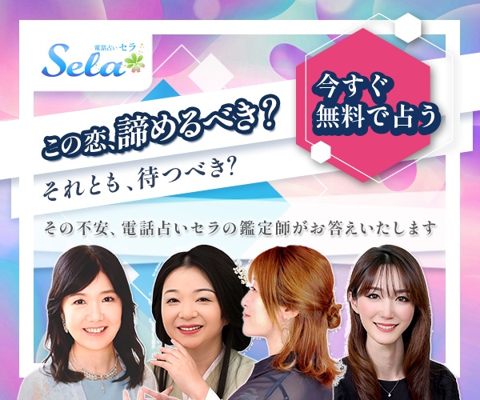
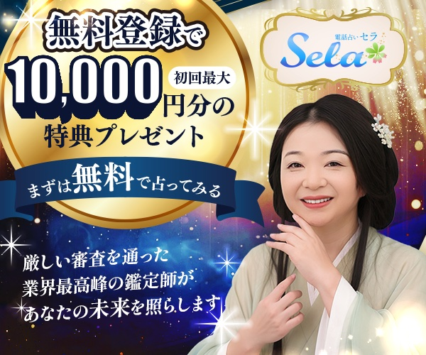
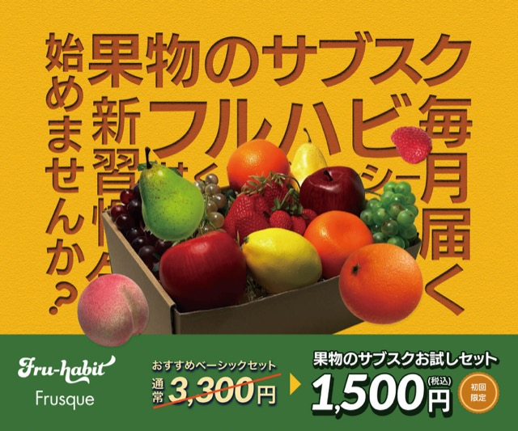
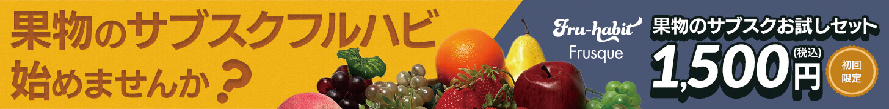
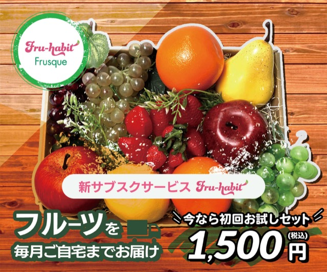
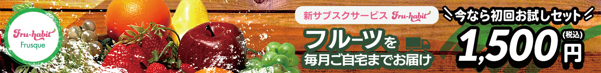
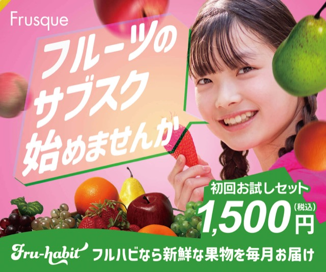
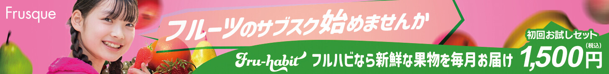

Works — Banner（実案件あり）
バナー制作
電話占いサービス「Sela（セラ）」の実案件広告バナーを担当。あわせて、自主制作（架空案件）のフルーツサブスク「フルハビ」の提案バナーも掲載しています。

Client Work実案件 — 電話占い「Sela」広告バナー
電話占いサービス「Sela（セラ）」の広告用バナーを実案件として担当しました。訴求の異なる2テーマを制作し、うち1テーマは配信で検証できるA/Bテスト用の2パターン構成です。
恋愛の悩み訴求（A/Bテスト用2パターン）


ターゲット：復縁や片思いなど、答えの出ない恋愛の悩みを抱える20〜40代の女性。夜にひとりでスマートフォンを眺めながら、不安を検索してしまう場面を想定しました。
「この恋、諦めるべき？それとも、待つべき？」と問いかけるコピーで悩みを自分ごと化し、「今すぐ無料で占う」のCTAへ導く構成です。A/Bテストで配信検証できるよう、コピー・CTA・レイアウトは共通のまま、鑑定師1人の親密さで訴えるver.1と、複数の鑑定師から選べる安心感で訴える集合のver.2の2パターンを制作。背景はオーロラ調のグラデーションで占いらしい神秘性を演出し、CTAはピンクの六角形で最後に視線が止まるようにしています。
初回特典訴求

ターゲット：サービスに興味はあるものの、料金への不安から登録をためらっている見込みユーザー。「最後のひと押し」を狙う特典訴求です。
「無料登録で初回最大10,000円分」の特典を主役に、金色の円形プレートと大きな数字でお得感をストレートに表現。夜空の紺と金のコントラストで神秘性と高級感を両立させ、リボン型の「まずは無料で占ってみる」で登録のハードルを下げています。高解像度の元データ（1600×1600px）から各媒体サイズへ展開できるデータ設計にしました。
Self-Initiated自主制作（架空案件）— フルーツサブスク「フルハビ」
サービス・企業ともに架空で設定し、コンセプト設計から行った自主制作です。「新しいフルーツ習慣を気軽に始めてほしい」という想いを込めた新発売の告知バナーとして、ターゲットによって響く訴求は異なるという考えから、コンセプトの異なる複数案を展開しました。
株式会社フルスクが展開するフルーツサブスク「フルハビ」の新発売告知として、リーダーボード（728×90px）とミディアムレクタングル（300×250px）の2サイズを1組に複数案を制作。初回お試しセット（¥1,500・税込送料込）の申込促進、サブスク登録の後押し、ブランド認知の向上を狙いとしています。
Variations3つの提案
各案とも、リーダーボード（728×90px）とミディアムレクタングル（300×250px）の2サイズ1組で制作しました。
A案 — インパクト訴求


ターゲット：20〜40代の幅広い男女層。仕事や家事に忙しい人の目にパッと留まり、興味を引くインパクト重視のデザインを意識しました。
「新しいフルーツ習慣を気軽に始めてほしい」という想いを込め、明るい黄色と青の補色でインパクトを演出。縦組・横組の文字配置で遊び心を加えて視線を誘導し、1,500円の初回お試しセットというお得感と手軽さを前面に出し、「ちょっと試してみたい」と感じさせるデザインを目指しました。
B案 — ナチュラル訴求


ターゲット：全年代。特定の年齢層を限定せず、子どもから大人まで誰もが「おいしそう」「試したい」と思える普遍的な魅力を意識しました。
背景に木の温かみを取り入れ、フルーツ本来の自然さ・みずみずしさを表現。明るい色合いと余白を活かしたシンプルなレイアウトで主役のフルーツを際立たせ、見た瞬間に「新鮮」「ヘルシー」「おいしそう」と直感的に感じられるよう工夫しました。
C案 — ライフスタイル訴求


ターゲット：20〜30代の若い世代。フルーツサブスクを新しいライフスタイルの一部として取り入れ、日常を豊かにしたいと考える層を想定しました。
人物写真を用いることでサービスを身近に演出。ブランドカラーのピンクと緑を基調に、キャッチコピーやサービス説明を視覚的に強調し、気軽に始められること、日々の生活を彩る楽しさが伝わるようデザインしました。
この作品の制作意図や工夫について、詳しくお話しできます。お気軽にご連絡ください。
お問い合わせ